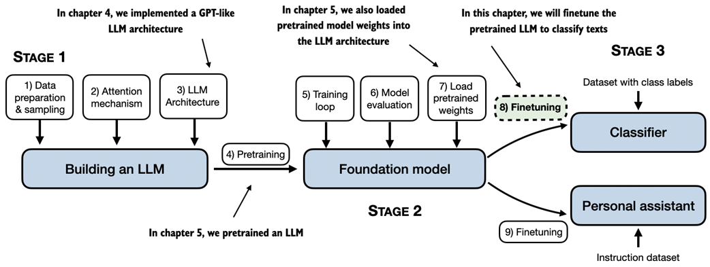
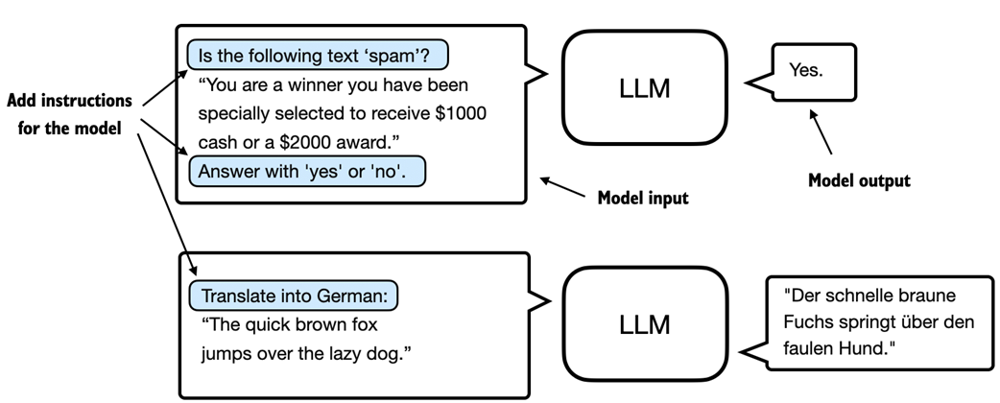
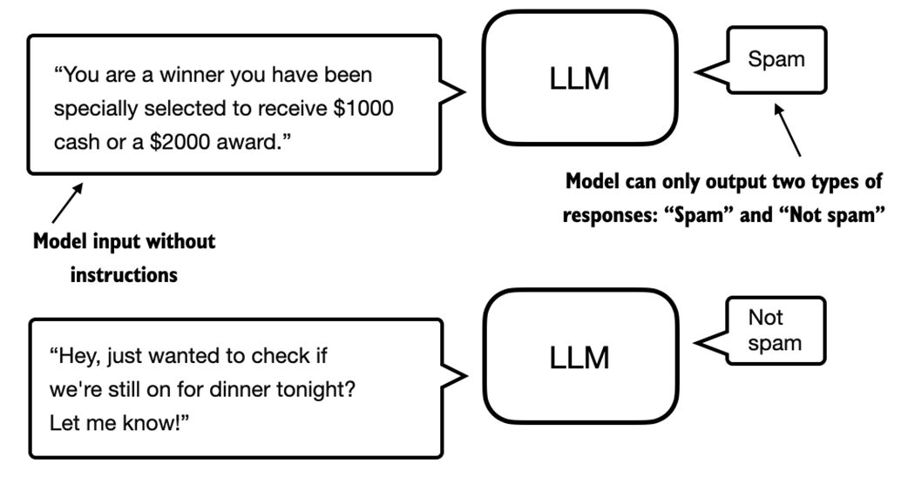
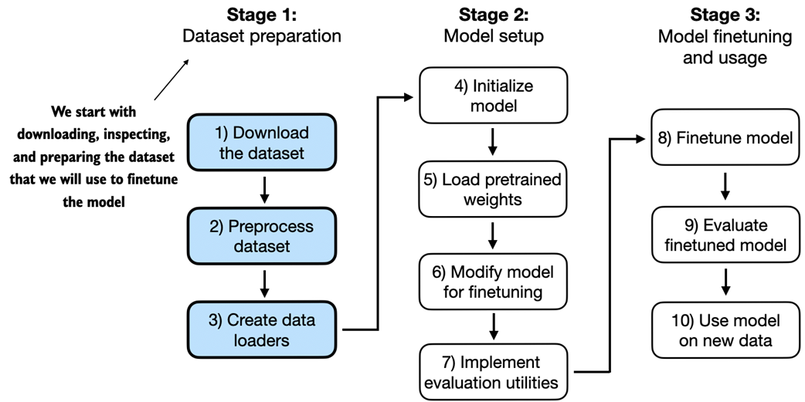
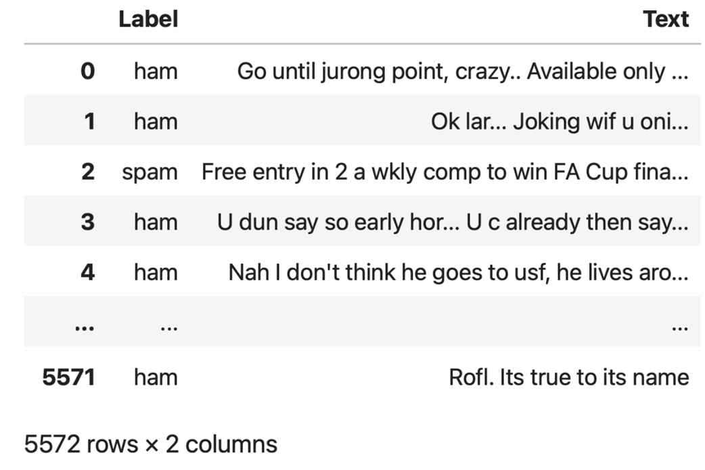
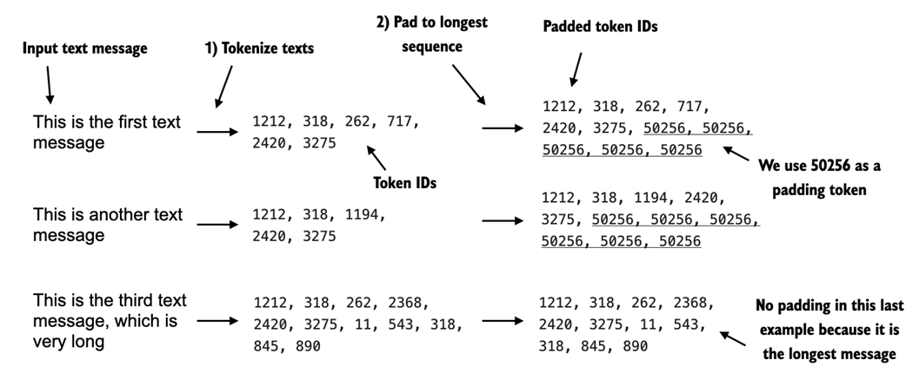
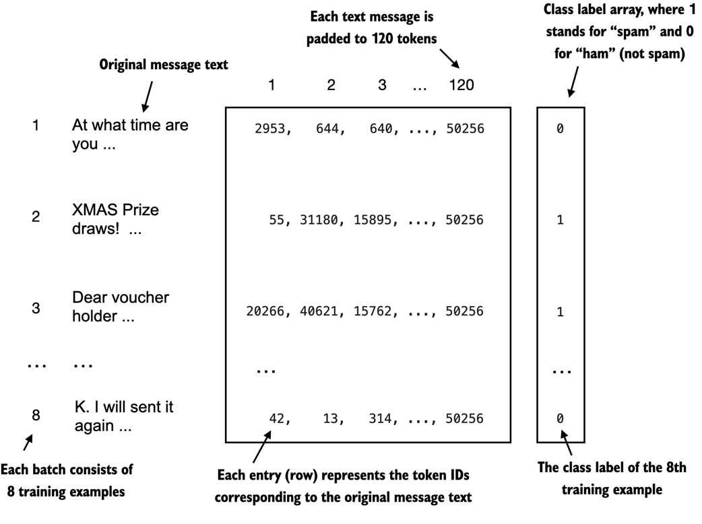

Introduction
Having coded the LLM architecture, pretrained it, and learned to import pretrained weights, the fruits of that labor are now reaped by fine-tuning the LLM on a specific target task: classifying text messages as "spam" or "not spam."

From the book (Raschka, 2025)6.1 Different Categories of Fine-Tuning
- Instruction fine-tuning: Training on tasks with specific instructions to improve understanding and executing natural language prompts. Best for varied tasks; demands larger datasets and compute.
- Classification fine-tuning: Training to recognize a specific set of class labels (e.g., "spam" / "not spam"). Highly specialized; requires less data and compute.

From the book (Raschka, 2025)
From the book (Raschka, 2025)6.2 Preparing the Dataset
The SMS Spam Collection dataset contains 5,572 text messages labeled "ham" (not spam) or "spam".
url = "https://archive.ics.uci.edu/static/public/228/sms+spam+collection.zip" download_and_unzip_spam_data(url, zip_path, extracted_path, data_file_path) df = pd.read_csv(data_file_path, sep="\t", header=None, names=["Label", "Text"]) # ham: 4825, spam: 747
Creating a Balanced Dataset
Undersample to 747 instances per class for balanced training:
def create_balanced_dataset(df):
num_spam = df[df["Label"] == "spam"].shape[0]
ham_subset = df[df["Label"] == "ham"].sample(num_spam, random_state=123)
balanced_df = pd.concat([ham_subset, df[df["Label"] == "spam"]])
return balanced_df
balanced_df["Label"] = balanced_df["Label"].map({"ham": 0, "spam": 1})
Splitting the Dataset
Split: 70% training, 10% validation, 20% testing.
train_df, validation_df, test_df = random_split(balanced_df, 0.7, 0.1)
train_df.to_csv("train.csv", index=None)
validation_df.to_csv("validation.csv", index=None)
test_df.to_csv("test.csv", index=None)
6.3 Creating Data Loaders
Text messages have varying lengths. Two options: truncate to shortest or pad to longest. Padding is chosen to preserve all content, using token ID 50256 (<|endoftext|>).

From the book (Raschka, 2025)class SpamDataset(Dataset):
def __init__(self, csv_file, tokenizer, max_length=None, pad_token_id=50256):
self.data = pd.read_csv(csv_file)
self.encoded_texts = [
tokenizer.encode(text) for text in self.data["Text"]
]
if max_length is None:
self.max_length = self._longest_encoded_length()
else:
self.max_length = max_length
self.encoded_texts = [et[:self.max_length] for et in self.encoded_texts]
self.encoded_texts = [
et + [pad_token_id] * (self.max_length - len(et))
for et in self.encoded_texts
]
def __getitem__(self, index):
encoded = self.encoded_texts[index]
label = self.data.iloc[index]["Label"]
return (torch.tensor(encoded, dtype=torch.long),
torch.tensor(label, dtype=torch.long))
def __len__(self):
return len(self.data)
Longest sequence: 120 tokens. Batches: 130 training, 19 validation, 38 test (batch size 8).
6.4 Initializing a Model with Pretrained Weights
from gpt_download import download_and_load_gpt2 model_size = "124M" settings, params = download_and_load_gpt2(model_size=model_size, models_dir="gpt2") model = GPTModel(BASE_CONFIG) load_weights_into_gpt(model, params) model.eval()
Verified with text generation: "Every effort moves you forward. The first step is to understand the importance of your work" -- confirms correct weight loading.
Testing instruction following (before fine-tuning) -- the model repeats the prompt instead of answering, confirming it lacks instruction fine-tuning capability.
6.5 Adding a Classification Head
Replace the output layer (768 -> 50,257) with a smaller classification layer (768 -> 2 classes).

From the book (Raschka, 2025)# Freeze all layers
for param in model.parameters():
param.requires_grad = False
# Replace output layer
torch.manual_seed(123)
num_classes = 2
model.out_head = torch.nn.Linear(
in_features=BASE_CONFIG["emb_dim"], out_features=num_classes
)
# Make last transformer block and final LayerNorm trainable
for param in model.trf_blocks[-1].parameters():
param.requires_grad = True
for param in model.final_norm.parameters():
param.requires_grad = True

From the book (Raschka, 2025)Output shape changes from [1, 4, 50257] to [1, 4, 2]. We use only the last row (outputs[:, -1, :]) for classification.
6.6 Calculating the Classification Loss and Accuracy
def calc_accuracy_loader(data_loader, model, device, num_batches=None):
model.eval()
correct_predictions, num_examples = 0, 0
if num_batches is None:
num_batches = len(data_loader)
else:
num_batches = min(num_batches, len(data_loader))
for i, (input_batch, target_batch) in enumerate(data_loader):
if i < num_batches:
input_batch = input_batch.to(device)
target_batch = target_batch.to(device)
with torch.no_grad():
logits = model(input_batch)[:, -1, :]
predicted_labels = torch.argmax(logits, dim=-1)
num_examples += predicted_labels.shape[0]
correct_predictions += (predicted_labels == target_batch).sum().item()
else:
break
return correct_predictions / num_examples
Initial accuracy (before fine-tuning): Training 46.25%, Validation 45.00%, Test 48.75% -- near random (50%).
Initial loss: Training 2.453, Validation 2.583, Test 2.322.
6.7 Fine-Tuning the Model on Supervised Data
def train_classifier_simple(model, train_loader, val_loader,
optimizer, device, num_epochs, eval_freq, eval_iter):
train_losses, val_losses, train_accs, val_accs = [], [], [], []
examples_seen, global_step = 0, -1
for epoch in range(num_epochs):
model.train()
for input_batch, target_batch in train_loader:
optimizer.zero_grad()
loss = calc_loss_batch(input_batch, target_batch, model, device)
loss.backward()
optimizer.step()
examples_seen += input_batch.shape[0]
global_step += 1
if global_step % eval_freq == 0:
train_loss, val_loss = evaluate_model(...)
print(f"Ep {epoch+1} (Step {global_step:06d}): "
f"Train loss {train_loss:.3f}, Val loss {val_loss:.3f}")
train_accuracy = calc_accuracy_loader(train_loader, model, device, ...)
val_accuracy = calc_accuracy_loader(val_loader, model, device, ...)
print(f"Training accuracy: {train_accuracy*100:.2f}% | "
f"Validation accuracy: {val_accuracy*100:.2f}%")
return train_losses, val_losses, train_accs, val_accs, examples_seen
Training Results (5 epochs, AdamW lr=5e-5)
| Epoch | Train Loss | Val Loss | Train Acc | Val Acc |
|---|---|---|---|---|
| 1 | 0.523 | 0.557 | 70.00% | 72.50% |
| 2 | 0.409 | 0.353 | 82.50% | 85.00% |
| 3 | 0.340 | 0.306 | 90.00% | 90.00% |
| 4 | 0.222 | 0.137 | 100.00% | 97.50% |
| 5 | 0.083 | 0.074 | 100.00% | 97.50% |
Training completed in ~5.65 minutes on an M3 MacBook Air.

From the book (Raschka, 2025)Final Evaluation
- Training accuracy: 97.21%
- Validation accuracy: 97.32%
- Test accuracy: 95.67%
6.8 Using the LLM as a Spam Classifier
def classify_review(text, model, tokenizer, device, max_length=None,
pad_token_id=50256):
model.eval()
input_ids = tokenizer.encode(text)
supported_context_length = model.pos_emb.weight.shape[0]
input_ids = input_ids[:min(max_length, supported_context_length)]
input_ids += [pad_token_id] * (max_length - len(input_ids))
input_tensor = torch.tensor(input_ids, device=device).unsqueeze(0)
with torch.no_grad():
logits = model(input_tensor)[:, -1, :]
predicted_label = torch.argmax(logits, dim=-1).item()
return "spam" if predicted_label == 1 else "not spam"
Testing on examples:
"You are a winner you have been specially selected to receive $1000 cash..."-- correctly predicted "spam""Hey, just wanted to check if we're still on for dinner tonight?"-- correctly predicted "not spam"
torch.save(model.state_dict(), "review_classifier.pth")
model_state_dict = torch.load("review_classifier.pth", map_location=device)
model.load_state_dict(model_state_dict)
Summary
- Two main strategies: classification fine-tuning and instruction fine-tuning
- Classification fine-tuning replaces the output layer with a small classification layer (2 output nodes instead of 50,256)
- The model is trained to output correct class labels instead of next tokens
- Model input remains text converted to token IDs, same as pretraining
- Pretrained model serves as a base model for fine-tuning
- Evaluation uses classification accuracy (fraction of correct predictions)
- Fine-tuning uses the same cross entropy loss as pretraining
- The last output token is used for classification due to causal attention giving it access to all previous tokens